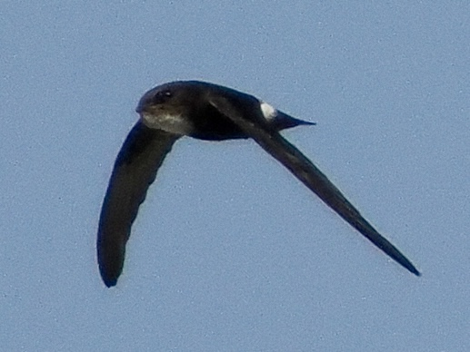
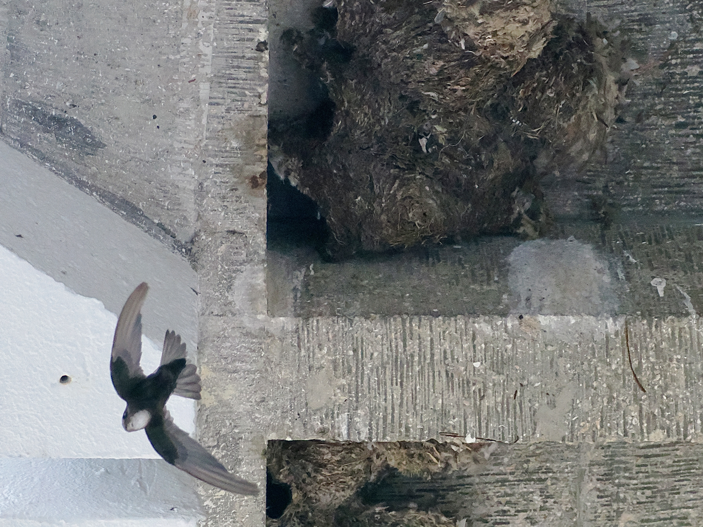
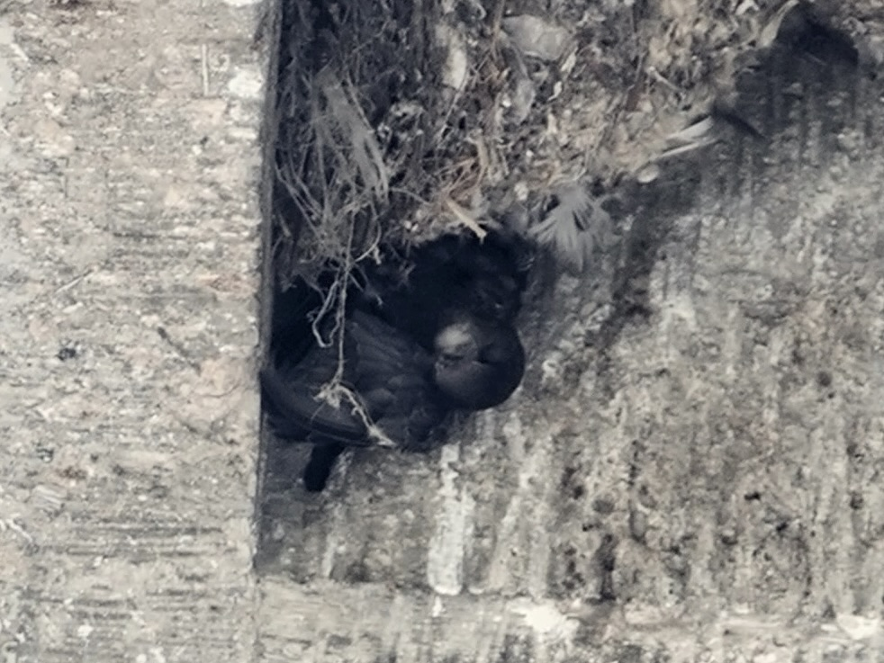

House Swift
Apus nipalensis
Order: Apodiformes
Family: Apodidae

A small, fast swift with a white rump and squarish tail. The family name of the swifts, Apodidae, means "without feet", to reference their small weak feet.

Swifts generally spend their time on the wing, but nest to breed. Dome-shaped nests are built with mud and saliva. In urban areas, these nests could be found in buildings. The CUHK university library holds HK's largest colony of House Swifts. Beware of droppings when walking under the nests!

Sometimes young swifts get tangled in the nest and never make it out...
Similar species
Pacific Swift
- Larger size
- Forked tail (vs square tail)